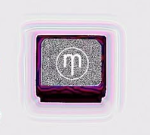

My longest-running venture
Mangosalad
A media world for undiscovered artists, built from issues, editions and formats that repeat.



One year of Mangosalad
Each month has a theme and one featured artist, who gets a three-post-wide release covering their art, mission, process and inspiration. Twelve months of that become the yearly magazine.
How it started
Mangosalad is my oldest project. It began as an Instagram identity where I posted my digital art and animations, and grew into something I wanted the world to be part of.
Designing the feed, not the post
This was my first real innovation. I didn't design single posts; I designed the whole Instagram page. Work came out in three-post-wide releases, so every drop landed as a full row across the grid.
Designing systems instead of single pieces got me hooked on editions, issues and releases, and it's where my interest in network-style studio broadcasting started.
The system
- A monthly theme that sets the mood.
- One featured artist a month, with a three-post-wide "rebrand" made about them: their art, their mission or dream, their process and inspiration.
- A yearly magazine collecting the year. I designed one and printed a single copy.
- TV episodes, with their own intro animation.
Why it matters to me
A magazine isn't a book. It has sections and formats that repeat, and that's what I fell for. Mangosalad is less a page than a world, or a small universe, with its own rhythm.
Where it is
On pause. It hasn't found its audience yet, but I think it's one of my best ideas and it will have its day. The next move is working out where it's genuinely useful to people, and getting them on board.